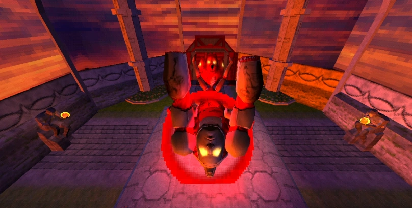

The Hideous Mass is a scorpion-like creature, made of featureless flesh covered in heavy armor. Its head features a lion-like design, most visible in its laying form. The creature possesses six legs, though it remains stationary during combat, and its scorpion-like tail has four glowing-eyed faces capable of firing harpoons. When enraged, it flips onto its back, exposing its vulnerable belly but becoming more aggressive and destructive.
Laying Form: The Hideous Mass lowers its body, hiding its belly and raising its tail to use its harpoon attack.
Enraged Form: When enraged, it flips onto its back, exposing its weak points and rapid-firing mortar attacks.
The Hideous Mass is a stationary but highly durable foe that alternates between two forms: Upright and Laying. It uses powerful attacks such as shockwaves, mortars, and harpoons to punish the player. Its behavior changes drastically when enraged, focusing on overwhelming aggression while exposing its weak spots for precision strikes.
In this form, the Hideous Mass exposes its belly, making it vulnerable to damage. However, it uses powerful area attacks to force the player to keep moving.
In this form, the Hideous Mass hides its belly, raising its tail to unleash devastating ranged attacks.
At low health, the Hideous Mass becomes enraged, flipping onto its back. While its weak spots become exposed, its flailing arms make precision attacks difficult, and it barrages the arena with mortar fire.